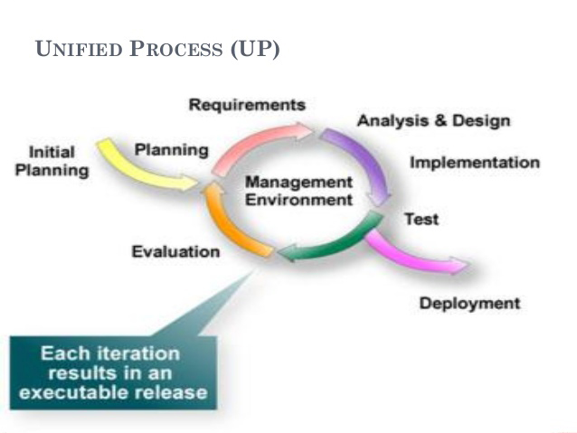
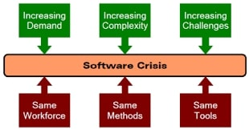

Cos'è l'Ingegneria del Software?
L'ingegneria del software è una disciplina che si occupa della progettazione, sviluppo e manutenzione di sistemi software complessi. Non si tratta solo di scrivere codice, ma di gestire processi, strumenti e persone per garantire la qualità e l'affidabilità del prodotto finale.
La Crisi del Software
Negli anni '60 si è manifestata la cosiddetta "crisi del software", dovuta a progetti fallimentari, costosi e difficili da gestire. Questo ha portato all'introduzione di approcci più rigorosi e metodologici nello sviluppo software.
Obiettivi dell'Ingegneria del Software
- Correttezza
- Affidabilità
- Robustezza
- Efficienza
- Manutenibilità